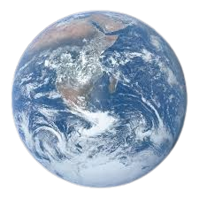

Terra

Nome do planeta: Terra.
Composição: A sua composição se dá por diversos gases, sendo 78% da atmosfera terrestre constituído por nitrogênio, 21% por oxigênio, isso sem falar na composição de argônio.
Atmosfera: A atmosfera é uma camada gasosa que envolve todo o planeta Terra. O nitrogênio e o oxigênio são os dois gases presentes em maior quantidade na atmosfera. A proteção do nosso planeta contra elementos externos e as condições necessárias para a manutenção de todas as formas de vida, como a filtragem da radiação solar e a regulação térmica, são garantidas pela presença da atmosfera.
Órbita e rotação: Sua rotação (movimento em torno de seu próprio eixo) é de 23 horas, 56 minutos e 4,1 segundos, e sua translação (movimento da terra em torno do sol) é de 365 dias (mais 5 horas, 45 minutos e 46 segundos).
Área da superfíce: 510 072 000[5][6][nota 4] km².
Volume : 1,08321×1012[3] km³.
Massa: 5,9736×1024[3] kg.
Temperatura: Média: 14ºC, mínima: -93,2ºC e máxima: 57,8ºC.